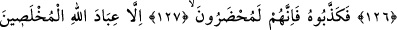
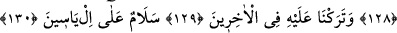
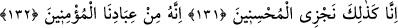
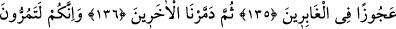
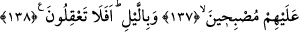

İLYAS VE LUT
ALEYHİMESSELÂM
123. İlyas da şüphe yok ki, peygamberlerdendi.
124, 125, 126. (İlyas) milletine: (Allah’a karşı gelmekten) sakınmaz mısınız?
Yaratanların en iyisi olan, sizin de Rabbiniz, sizden önce gelen atalarınızın da Rabbi
olan Allah’ı bırakıp da Ba’l’e mi taparsınız? demişti.
127, 128. Bunun üzerine İlyas’ı yalanladılar. Onun için Allah’ın ihlâslı kulları
müstesna; onların hepsi (cehenneme) götürüleceklerdir.
129, 130. Sonra gelenler içinde, kendisine bir ün bıraktık, «İlyas’a selâm!» dedik.
131. Şüphesiz biz, iyileri işte böyle mükâfatlandırırız.
132. Çünkü o, bizim mü’min kullarımızdandı.
133. Lût da elbette peygamberlerdendi.
134, 135, 136. Geridekiler arasında kalan yaşlı bir kadın dışında, Lût’u ve
ailesinin hepsini kurtardık. Sonra diğerlerini yok ettik.
137, 138. (Ey insanlar!) Elbette siz de sabah ve akşam onlara uğruyorsunuz. Hâla
akıllanmayacak mısınız?
“İlyas da şüphe yok ki” İsrailoğullarına gönderilen “peygamberlerdendi.”
Bu zat, Mûsâ (a.s.)’ın kardeşi Hârûn (a.s.)’ın torunlarından İmran oğlu, Hârûn oğlu,
Izâr oğlu, Fahhâs oğlu, Şir oğlu, Yasin oğlu İlyas’tır. Meşhur olan görüş budur;
müfessirlerin çoğu da bu görüştedir. Bazı muteber eserlerde zikredilen şu husus da buna
delâlet eder. Peygamberlerden bedenleriyle, cisimleriyle halen mevcut olanlar dört
tanedir. Bunlardan iki tanesi İdris ve İsa (a.s.) gökte, iki tanesi de Hızır ve İlyas (a.s.)